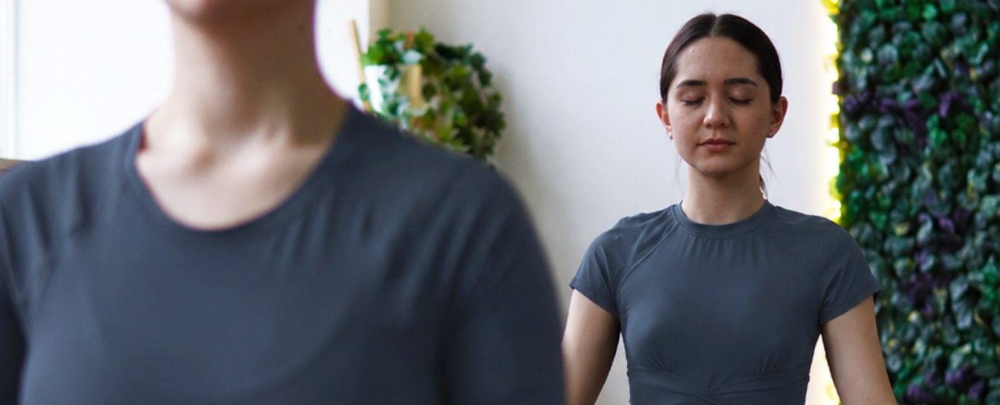

Фитнес для девушек · Краснодар
Женское здоровье
Дыхание и контроль мышц
Записаться на пробное
Кому подойдёт
Если вам интересна мягкая практика с акцентом на мышцы тазового дна, осанку и дыхание.
Как проходит занятие
Упражнения помогают почувствовать работу мышц и согласовать движение с дыханием. Особенности занятий и ограничения можно посмотреть ниже для выбранной студии.
Занятия в студиях
Северная, 324А
Уточните у администратора условия посещения и ограничения перед первым занятием.
1 Мая, 188
Описание · 1 Мая
Максимально осознанный и комплексный подход к оздоровлению женского организма. Тренировка направлена на укрепление мышц тазового дня и брюшной области,улучшение осанки, нормализации гормонального фона и кровообращения.
Противопоказания · 1 Мая
Острые инфекционные и воспалительные заболевания, повышенная температура. Острые воспалительные заболевания органов малого таза. Маточные кровотечения неясного происхождения. Выраженные боли в нижней части живота и области малого таза невыясненной причины. Недавние операции на органах малого таза и брюшной полости без разрешения врача. Обострение хронических заболеваний, препятствующее физической активности. Серьёзные сердечно-сосудистые заболевания, при которых противопоказана физическая нагрузка. Беременность. Любые состояния, при которых врач рекомендовал временно исключить физическую активность.
Трудовой Славы, 6
Описание · Трудовой Славы
Специализированная тренировка, направленная на укрепление мышц тазового дна, развитие осознанного контроля над телом и улучшение общего физического самочувствия. В программе используются упражнения на дыхание, мягкую активацию и расслабление мышц, а также элементы функциональной гимнастики.
- Укрепление и развитие контроля над мышцами тазового дна;
- улучшение осанки и стабилизации корпуса;
- развитие правильного дыхания и координации движений;
- формирование навыка осознанного управления мышцами;
- поддержание женского здоровья и профилактика функциональных нарушений.
Одежда: удобная спортивная форма, носки.
Противопоказания · Трудовой Славы
острые инфекционные и воспалительные заболевания, повышенная температура. Острые воспалительные и инфекционные заболевания органов малого таза. Кровотечения неясного происхождения. Острый период после операций и родов без разрешения врача. Выраженный болевой синдром в области таза и промежности. Обострение хронических гинекологических заболеваний. Беременность и послеродовой период требуют индивидуального подбора нагрузки и согласования с врачом. Опущение органов малого таза и другие диагностированные нарушения требуют предварительной консультации специалиста.